Supported Features
Introduction
Conventions
This section summarizes the main formulae that are used for implementing the HMC for dynamical Wilson fermions in higher representations. The Dirac operator is constructed following Ref. [@Luscher:1996sc], but using Hermitian generators
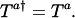
For the fundamental representation, the normalization of the generators is such that:

For a generic representation 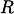, we define:
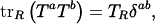
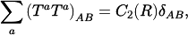
which implies:
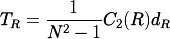
where 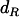 is the dimension of the representation . The relevant group factors may be computed from the Young tableaux of the representation of 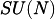 by using the formula:
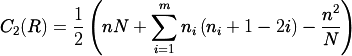
where 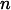 is the number of boxes in the diagram, 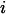 ranges over the rows of the Young tableau, 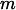 is the number of rows, and 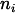 is the number of boxes in the -th row.
R |
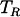 |
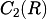 |
|
|---|---|---|---|
fund |
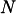 |
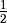 |
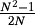 |
Adj |
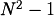 |
||
2S |
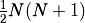 |
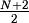 |
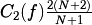 |
2AS |
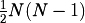 |
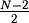 |
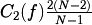 |
A generic element of the algebra is written as: 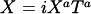, and the scalar product of two elements of the algebra is defined as:
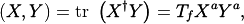
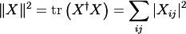
matrices
We use the chiral representation for the Dirac matrices:
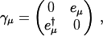
where 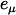 are 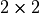 matrices given by 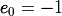, 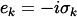,
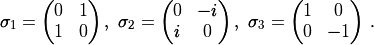
We have:
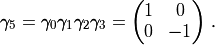
The Dirac operator
The massless Dirac operator is written as in Ref. [@Luscher:1996sc]:
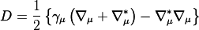
with
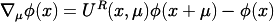
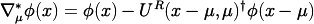
and therefore the action of the massive Dirac operator yields:
(1)
where 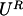 are the link variables in the representation .
Rescaling the fermion fields by 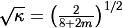, we can write the fermionic action as:

where
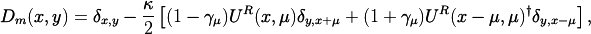
and the Hermitian Dirac operator is obtained as:
(2)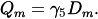
The fermionic determinant in the path integral can be represented by introducing complex pseudofermionic fields:
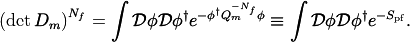
Force for the HMC molecular dynamics
The HMC Hamiltonian is given by:
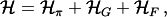
where
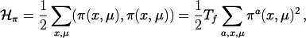
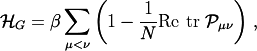
(3)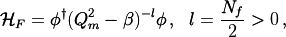
and we have introduced for each link variable a conjugate momentum in the algebra of the gauge group: 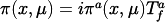. In the expression of 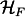 we omitted the sum over position, spin and color indices and we have also introduced an arbitrary shift for the matrix , as this will be useful in the discussion for the RHMC algorithm.
The equation of motion for the link variables are given by (the indicates the derivative with respect to the molecular dynamics time):
while the equation of motion for the momenta can be obtain as follows from the requirement that the hamiltonian is a conserved quantity:
(4)
For the first two derivatives we have:
(5)
(6)
where is the sum of the staples around the link .
The computation of the fermionic force goes as follows. We only consider the case since this is the only case relevant both for the HMC algorithm and the RHMC algorithm (see below). We have:
(7)
Defining:
(8)
and using the fact that the matrix is hermitian, we can rewrite (7) as
(9)
Inserting the explicit form of , eqs. (2) and (1) into eq. (9) we obtain
where the sum over spin and color indices is intended and we made explicit the fact the the whole expression is real. We now use the fact that
(10)
Notice that, since we define , the in the above equation are the same as those appearing in the expressions for . Using eq. (10) in the expression for we find:
(11)
Note that capitalized indicates the trace over both color and spin indices as opposed to the lower case , which is the trace over color only.
Inserting eq.s (5), (6) into eq. (4) we obtain the equations of motion for the momenta
(12)![\begin{aligned}
\dot\pi^a(x,\mu) &= \dot\pi^a_G(x,\mu) + \dot\pi^a_F(x,\mu) \, , \\
\dot\pi^a_G(x,\mu) &= \frac{\beta}{N} \frac{1}{T_f} \mathrm{Re\ tr\ } \left[ i T^a_f U(x,\mu) V^\dagger(x,\mu) \right] \, ,\\
\dot\pi^a_F(x,\mu) &=-\frac{1}{T_f} \mathrm{Re\ Tr\ } \left[ iT^a_R U^R(x,\mu) \gamma_5 (1-\gamma_\mu) \right. \nonumber\\
&\quad\quad\quad \left. \left\{ \eta(x+\mu)\otimes\xi(x)^\dagger + \xi(x+\mu)\otimes\eta(x)^\dagger \right\} \right]\, . \end{aligned}](../_images/math/3bee64b1c0d384746dcd747ce54d9103d64f14a8.png)
For sake of convenience we introduce the following projectors over the algebra in the representation
which can be used to rewrite eq.s eq:PIDOT2 and (12) in a more compact form:
(13)
Checks of the MD force
The formulae derived in the previous Section can be checked against two known examples. The first, and almost trivial, check is obtained by assuming that the representation is again the fundamental representation. The well-known expression for the MD force for the usual HMC is then recovered.
The second case that has already been studied in the literature is the case of fermions in the adjoint representationof the gauge group SU() [@Donini:1996nr]. We agree with eq. (16) in Ref. [@Donini:1996nr], provided that we exchange the indices and in that formula.
HMC Algorithm
We briefly review the construction of the HMC algorithm [@{??}].
Given the action  of a system of bosonic fields
of a system of bosonic fields  , our
goal is to generate a Markov process with fixed probability distribution
. A sufficient condition to have such a
Markov process is that it is ergodic and it satifies detailed balance:
, our
goal is to generate a Markov process with fixed probability distribution
. A sufficient condition to have such a
Markov process is that it is ergodic and it satifies detailed balance:
We define with the following three-step process:
We expand the configuration space with additional fields, the “momenta” randomly chosen with probability such that – usually one takes ;
In the extended configuration space , we generate a new configuration with probability such that
(reversibility condition)
We accept the new configuration with probability
It is easy to see that the resulting probability
satisfies detailed balance. Care must be taken to ensure ergodicity.
As already stated, the distribution is generally taken to be
gaussian (this should also guarantee ergodicity). The process is
instead identified with the Hamiltonian flow of a yet unspecified
Hamiltonian in the phase space  (giving to the
meaning of “momenta”). The time reversal symmetry of classical dynamics
equation of motion guarantees the reversibility condition. The resulting
probability is then a delta function (the process is completely
deterministic). Numerical integration to a given accuracy will result in
a broader distribution and care must be taken to guarantee the
reversibility condition in this case. Since we want a high acceptance
rate (low correlation among the configurations), we must carefully
choose the Hamiltonian . One simple way is to take to be
gaussian and define
(giving to the
meaning of “momenta”). The time reversal symmetry of classical dynamics
equation of motion guarantees the reversibility condition. The resulting
probability is then a delta function (the process is completely
deterministic). Numerical integration to a given accuracy will result in
a broader distribution and care must be taken to guarantee the
reversibility condition in this case. Since we want a high acceptance
rate (low correlation among the configurations), we must carefully
choose the Hamiltonian . One simple way is to take to be
gaussian and define ![H(\pi,\phi)=-\ln [P_k(\pi) P_S(\phi)] = \pi^2/2 + S(\phi)](../_images/math/609ddad74378c8462480cf7f874f227bafa3e0a1.png) (omitting irrelevant constants). If is exactly conserved by the process
then the acceptance probability is 1.
(omitting irrelevant constants). If is exactly conserved by the process
then the acceptance probability is 1.
When fermionic degrees of freedom are present in the action , we can first integrate them out, resulting in a non local bosonic action and then apply the above scheme. In practice, to deal with a non-local action is not convienent from a numerical point a view and stochastic estimates are used.
Consider a quadratic fermionic term in the action:
with a generic interaction matrix
function of the bosonic fields . The contribution of
this term to the partition function is
.
Assuming that the matrix is positive definite, we can rewrite
![\mathrm{det}[M]=\int d\bar\eta d\eta \exp[ \bar\eta (M)^{-1} \eta ]](../_images/math/3998b499b5a3860ff61cd677d6fc678ffaa27a08.png) , where
, are two new complex bosonic fields, called
pseudofermions. This term can be taken into account generating random
pseudofermions , with the desidered probability
distribution and keeping then fixed during the above HMC configuration
generation for the remaining bosonic fields .
, where
, are two new complex bosonic fields, called
pseudofermions. This term can be taken into account generating random
pseudofermions , with the desidered probability
distribution and keeping then fixed during the above HMC configuration
generation for the remaining bosonic fields .
RHMC formulation
The fermionic part of the HMC hamiltonian, for degenerate quarks and pseudofermions, can be written as:
(14)
and . For the sake of simplicity we will set all the to be equal:
In the RHMC algorithm [@Clark:2005sq] rational approximations are used whenever we need to take some fractional power of the positive definite fermion matrix .
In this implementation we use three different rational approximations.
The first one is used to approximate eq. (14) (we need only one approximation because all are equal):
(15)

Using the formulas derived in the previous sections, it is easy to write the force corresponding to eq. (15). In fact, eq. (15) is nothing but a sum of terms of the form eq. (15) once we put , . The RHMC force will be then given by a sum over of terms given by
eq. (13) multiplied by a factor  . Notice that since , to compute as in eq. (8) a simple shifted inversion is required.
. Notice that since , to compute as in eq. (8) a simple shifted inversion is required.
The second rational approximation is required in the heat bath update of pseudofermions. In order to generate pseudofermions distributed as in eq. (14), a simple two-step process is used. For each pseudofermion we first generate a gaussian distributed field :
and then we set:
making use of the fact that is hermitean (notice the plus sign in the exponent.) The RHMC algorithm uses a rational approximation to compute the above quantities (again we need only one approximation since all are equal):
The third rational approximation is used in the code for the Metropolis test. Starting from eq. (14) for each pseudofermion we can rewrite:
where we used the property that is hermitean. The rational approximation needed in this case is:
Notice that if the coefficients for the two approximations and can each be obtained from the other.
In order to compute the coefficients , appearing in the rational approximations the Remez algorithm is needed. In this implementation we do not compute those coefficients “on the fly”, but rather we use a precomputation step to generate a table of coefficients form which we pick up the right values when needed. The generation of this table goes as follows.
First note that we need to compute rational approximations for a function of the form and the approximation must be accurate over the spectral range of the operator . To simplify the computation of the table we note that the following proposition holds: if is a homogeneous function of degree and is an optimal (in the sense of relative error) rational approximation to over the interval to a given accuracy then is an optimal rational approximation for the same function and the same accuracy over the interval . Notice that the coefficients of the “rescaled” rational approximation are easily obtained from that of the original approximation. A simple corollary is that, given a homogeneuos function , we can divide the rational approximations with the same accuracy in classes distinguished by the ratio ; within each class the coefficients of the rational approximations are easily related to each other, so that we only need to compute one rational approximation in each class. This is what is done in our implementation.
In detail: we generate a table containing the coefficients for the rational approximations belonging in different classes distinguished by the function which we want to approximate and the accuracy which is required. We arbitrary set to a fixed value equal to the absolute upper bound on the spectrum of the matrix . This choice fixes the representative of each class, because the lower bound of the approximation is now a function of .
At run-time this table is used to generate optimal rational approximations rescaling the precomputed coefficients to the desired interval containing the spectrum of the matrix . This interval is obtained by computing the maximum and minimum eigenvalue of on each configuration when needed. In our code we update this interval only before the metropolis test, while we keep it fixed during the molecular dynamics.
Even-Odd preconditioning
It is a very well know fact that the time spend for a simulation with dynamical fermions is dominated by the time required for the inversions of the Dirac operator. The convergence of such inversions can be improved using an appropriate precondining. The idea is to rewrite the fermionic determinant as a determinant (or product of determinants) of better conditioned matrix (matrices) than the original Dirac operator. For the non-improved Wilson action this can be easily done using the even-odd preconditioning. We start rewriting the Dirac operator as a block matrix:
where each block has a dimension half that of the original Dirac matrix. The diagonal blocks connecting sites with the same parity are proportional to the identity matrix, while off-diagonal blocks connect sites with opposite parity. We have (since is -hermitean):
The determinant of the Dirac matrix can be rewritten as:

using the well known formula for the determinant of a block matrix. Since the determinant of and of are the same the latter can be used in numercal simulations. Note that the even-odd preconditioned matrix only connects sites with the same parity thus it have only half of the size of the original Dirac matrix and as it is -hermitean. We define as before the hermitean matrix , which will be used in practice.
The formulation of the HMC algorithm does not change and the only difference is that pseudofermions fields are now only defined on half of the lattice sites, conventionally the even sites in what follows. We now give the explicit expression for the fermionic force for the preconditioned system described by the hamiltonian:
where as before we are assuming or a rational approximation of the actual fractional power function, and where we made explicit that is only defined on even sites. Eq. (9) is unchanged:
(16)
where as before we have defined:
The explicit form of must be used at this point. We have:
(17)
Defining
and inserting eq. (17) into eq. (16) we find:
(18)
and for convenience we use the shorthand notation:
From eq. (18) it is clear that the fermionic force has a different expression on sites of different parities. Proceeding as before we arrive at the final expressions. For :
while for :
Two-point functions
This is a summary of the formulae used for the mesonic two-pt functions.
Let and be two generic matrices in the Clifford algebra, we define the two-pt function:
Performing the Wick contractions yields:
In practice we invert the Hermitean Dirac operator by solving the equation:
where is a collective index for colour and spin, and , are the position of the source for the inverter.
Using the field that we obtain from the inverter, the correlator above becomes:
where
, and .
Hasenbusch acceleration
Let us summarize the Hasenbusch trick (for two flavours)
where is the hermitian Dirac operator. After integration over the pseudofermions it gives the determinant:
The Hasenbusch trick can be rewritten in the following form :
Where can be chosen arbitrarily as long as the determinant is well defined. We discuss in the next subsections various choices of .
In any case the two term can be evaluated independently, and we have:
This can be combined with even-odd preconditioning.
Wilson Mass Shift
Assume
Note that, as written in a comment in the code, .
Then
The force can then be computed :
Note that the equation as now the standard form of the forces for the HMC algorithm provided that:
From which we deduce
Which matches one comment in the the force_hmc.c file.
Even-Odd Preconditioning
Writing
The determinant in the 2 flavour case can be written as follows:
Note that can be computed:
Now we can conveniently rewrite
From the last equation we deduce that:
Note that the first determinant is a constant that could be computed.
In the following we will denote
where is defined on the odd sites of the lattice.
Now defining
We thus have
and
Note that as in the non-even-odd case this can be rewritten as:
Twisted Mass Shift
Assume
Note that and that .
Instead of dealing with  , we consider the slightly more general case where the
determinant to evaluate is
, we consider the slightly more general case where the
determinant to evaluate is
The following formulae can then be used for the case of several hasenbusch masses. The case of the determinant can be recovered by setting in the following equations.
We have:
The force can then be computed: (global sign and factor have to be checked)
From which we deduce
Note that in the particular case where ,

Which leads to
Note also that the forces are explicitly proportional to .
Even-Odd Preconditioning
Note that we have : .
Note that can be computed:
Now we can conveniently rewrite
From the last equation we deduce that:
Note that the first determinant is a constant that could be computed.
In the following we will denote
where  is defined on the odd sites of the lattice.
is defined on the odd sites of the lattice.
We thus have
and we thus get the following Hamiltonian:
The corresponding force then reads :
Now using that , the previous equation can be written:
with
where we have used that
Furthermore we have
Now noting that
We have
Now chosing , , , and allows to write:
with
We have used that and
Determinant Ratio
We use that
We thus have to compute
![\begin{aligned}
\dot{\mathcal{H}_{F_2}} =& \phi_2^\dagger\big[ \delta \hat{W}_-
(\hat{Q}_+ \hat{Q}_-)^{-1} \hat{W}_+ + \hat{W}_-
(\hat{Q}_+ \hat{Q}_-)^{-1} \delta \hat{W}_+ \\
+& \hat{W}_- \delta \hat{Q}_-^{-1} \hat{Q}_+^{-1} \hat{W}_+ +
\hat{W}_- \hat{Q}_-^{-1} \delta \hat{Q}_+^{-1} \hat{W}_+ \big] \phi_2 \\
=& \phi_2^\dagger\big[ \dot{\hat{W}}_-
(\hat{Q}_+ \hat{Q}_-)^{-1} \hat{W}_+ + \hat{W}_-
(\hat{Q}_+ \hat{Q}_-)^{-1} \delta \hat{W}_+ \\
-& \hat{W}_- \hat{Q}_-^{-1} \dot{\hat{Q}}_- \hat{Q}_-^{-1} \hat{Q}_+^{-1} \hat{W}_+ -
\hat{W}_- \hat{Q}_-^{-1} \hat{Q}_+^{-1} \dot{\hat{Q}}_+ \hat{Q}_+^{-1} \hat{W}_+ \big] \phi_2 \\\end{aligned}](../_images/math/e7bad565e7384f7329cd4bb46825cbc6c57e8be6.png)
Now we introduce

such that

Now recalling that
Now can write the last expression in terms of .
with
Twisted Wilson-Dirac Operator
Instead of applying the eo preconditionning to the twisted mass operator we can use the wilson dirac eo operator and do a different splitting.
We define:
Now we split the determinant as follows:
And we choose
The corresponding Hamiltonian read:
Since the operator are now very similar to the non even-odd case, we can reuse some formulae. In particular, we can rewrite the Hamiltonian as follows:
From which we have the following forces:
Now we want to rewrite the last equation as a function of
where we have used that
Furthermore we have
noting that
and chosing , , , and allows us to write:
with
We have used that .
Similarly for the second Hamiltonian we get:
which is exactly the force that appears in case of a pure Wilson-Dirac even-ddd preconditioned operator up to a multiplicative factor.
Clover Term
The clover term can be written as
(19)
with the (unconventional) definition of given by
![\sigma_{\mu\nu} = \frac{1}{2}[\gamma_\mu,\gamma_\nu].](../_images/math/996f7ffff53e4d8cf73ca4027491755f9e3cb3aa.png)
With the Euclidean definition of the gamma matrices satisfies
For the Hermitian Dirac operator we can make the following replacement without affecting any of the calculations presented here.
The field strength tensor is defined as
with
Because we have . For this reason we can change the sum over in Eq. (19) to a sum over and a factor of two.
The quantity is Hermitian and block diagonal. It can be written as
with the definitions
Pseudofermion Forces
For the forces we use the following short-hand notation for the derivative with respect to the link variables.
To calculate the pseudofermion forces let us write down the action as

where is the Hermitian Dirac operator. When differentiating the action we obtain
(20)
with the definitions
Forces
Here we will only consider the forces from the clover term and not the hopping term. The clover part of the Dirac operator is given by
(21)
When inserting Eq. (28) we obtain
From the definition of it follows that
This can in be written as
In a short hand notation we need to calculate
(22)
with
This matrix has the properties . The expression for contains eight different terms (two from each of the four leafs). The eight contributions to the force can be written as
![\begin{aligned}
F_1(x) &=
\mathrm{Re}~\mathrm{tr}[\dot{U}_\mu(x)U_\nu(x+\hat{\mu})U_\mu^\dagger(x+\hat{\nu})U_\nu^\dagger(x)X_{\mu\nu}(x)] \\
F_2(x) &=
\mathrm{Re}~\mathrm{tr}[\dot{U}_\mu(x)U_\nu^\dagger(x+\hat{\mu}-\hat{\nu})U_\mu^\dagger(x-\hat{\nu})X_{\mu\nu}^\dagger(x-\hat{\nu})U_\nu(x-\hat{\nu})] \\
F_3(x) &=
\mathrm{Re}~\mathrm{tr}[\dot{U}_\mu(x)U_\nu^\dagger(x+\hat{\mu}-\hat{\nu})X_{\mu\nu}^\dagger(x+\hat{\mu}-\hat{\nu})U_\mu^\dagger(x-\hat{\nu})U_\nu(x-\hat{\nu})] \\
F_4(x) &=
\mathrm{Re}~\mathrm{tr}[\dot{U}_\mu(x)X_{\mu\nu}(x+\hat{\mu})U_\nu(x+\hat{\mu})U_\mu^\dagger(x+\hat{\nu})U_\nu^\dagger(x)] \\
F_5(x) &=
\mathrm{Re}~\mathrm{tr}[\dot{U}_\mu(x)X_{\mu\nu}^\dagger(x+\hat{\mu})U_\nu^\dagger(x+\hat{\mu}-\hat{\nu})U_\mu^\dagger(x-\hat{\nu})U_\nu(x-\hat{\nu})] \\
F_6(x) &=
\mathrm{Re}~\mathrm{tr}[\dot{U}_\mu(x)U_\nu(x+\hat{\mu})X_{\mu\nu}(x+\hat{\mu}+\hat{\nu})U_\mu^\dagger(x+\hat{\nu})U_\nu^\dagger(x)] \\
F_7(x) &=
\mathrm{Re}~\mathrm{tr}[\dot{U}_\mu(x)U_\nu(x+\hat{\mu})U_\mu^\dagger(x+\hat{\nu})X_{\mu\nu}(x+\hat{\nu})U_\nu^\dagger(x)] \\
F_8(x) &=
\mathrm{Re}~\mathrm{tr}[\dot{U}_\mu(x)U_\nu^\dagger(x+\hat{\mu}-\hat{\nu})U_\mu^\dagger(x-\hat{\nu})U_\nu(x-\hat{\nu})X_{\mu\nu}^\dagger(x)]
\end{aligned}](../_images/math/1ef01dbcfd9c04f71b7142a9be4c9c1ce7a0df39.png)
where each term should be multiplied by . The calculation can be done efficiently by noticing that several products and terms appear in multiple places. Introduce the intermediate variables
![\begin{aligned}
Z_0 &= X_{\mu\nu}(x) \\
Z_1 &= X_{\mu\nu}(x+\hat{\mu}) \\
Z_2 &= X_{\mu\nu}(x-\hat{\nu}) \\
Z_3 &= X_{\mu\nu}(x+\hat{\mu}-\hat{\nu}) \\
Z_4 &= X_{\mu\nu}(x+\hat{\mu}+\hat{\nu}) \\
Z_5 &= X_{\mu\nu}(x+\hat{\nu}) \\
W_0 &= U_\mu^\dagger(x-\hat{\nu}) \\
W_1 &= U_\nu(x-\hat{\nu}) \\
W_2 &= U_\nu(x+\hat{\mu}) \\
W_3 &= U_\mu^\dagger(x+\hat{\nu}) \\
W_4 &= U_\nu^\dagger(x) \\
W_5 &= U_\nu^\dagger(x+\hat{\mu}-\hat{\nu}) \\
W_6 &= W_0W_1 \\
W_7 &= W_2W_3 \\
W_8 &= W_7W_4-W_5W_6
\end{aligned}](../_images/math/2bb074dd3c870b75ec5b086ab6a92393c2ac56b4.png)
The total force can now be written as
This brings us down to a total of 15 matrix multiplications and 6 additions.
Logarithmic Forces
In the case of even-odd preconditioning (see the next section) the action of the small determinant can be written as

The derivative is given by
with given by

Both the determinant and the inverse of can be calculated from an LDL decomposition. If we insert the above definition we obtain
Since is Hermitian we can write the result as two times the real part. To simplify the result we define such that
This is equivalent to Eq. (31) except from the factor and the definition of  .
Notice that we still have the identity .
The sum over can be extended to all sites by setting to zero on the even sites.
To calculate the inverse we introduce the definitions:
.
Notice that we still have the identity .
The sum over can be extended to all sites by setting to zero on the even sites.
To calculate the inverse we introduce the definitions:
Because of hermiticity we know that and . The six independent elements of can now be written as
Even-odd Preconditioning
Method 1
We can write the determinant as
Use the notation
The action is
Forces for -term
The derivative is
and we can write it as
with
Forces for -term
The derivative is
and we can write it as
with
The explicit expression for is given by
and it can be written as
with
Method 2
The action of can also be expressed directly as the logarithm of the determinant.
This is the approach implemented in the code.
LDL factorization
With even-odd preconditioning we need to calculate the inverse when applying the dirac operator and when calculating the forces. Because this matrix is Hermitian and block diagonal it can be inverted locally with an exact solver. The most practical solver is via an LDL decomposition.
Sum over
Sum over .
The determinant is given by
LDL Decomposition
Calculates the LDL decomposition in-place. After the decomposition, the lower triangular part of is and the diagonal is .
do i=0, N-1
do k=0, i-1
A_ii = A_ii - L_ik * conj(L_ik) * A_kk
enddo
do j=i+1, N-1
do k=0, i-1
A_ji = A_ji - A_jk * conj(L_ik) * A_kk
enddo
A_ji = A_ji/A_ii
enddo
enddo
Forward substitution
Calculates .
do i=0, N-1
x_i = b_i
do k=0, i-1
x_i = x_i - A_ik * x_k
enddo
enddo
Backward substitution with diagonal
Calculates .
do i=N-1, 0
x_i = x_i/A_ii
do k=i+1, N-1
x_i = x_i - conj(A_ki) * x_k
enddo
enddo
Full inversion
This algorithm calculates the inverse from the LDL decomposition. Because the inverse is Hermitian we only calculate the lower triangular part.
do i=0, N-1
B_ii = 1
do j=i, N-1
do k=i, j-1
B_ji = L_jk * B_ki
enddo
enddo
do j=N-1, i
B_ji = B_ji/L_ii
do k=j+1, N-1
B_ji = conj(L_kj) * B_ki
enddo
enddo
enddo
Exponential Clover Term
The exponential version of the clover term (including mass term) can be written as
(23)
where is again defined by
![\sigma_{\mu\nu} = \frac{1}{2}[\gamma_\mu,\gamma_\nu].](../_images/math/386dcdc65a5de5c41ffd4929a7c3a296bc8e86d1.png)
As for the clover term above, we can simplify the sum over to a sum over  and introduce a factor of two. We define
and introduce a factor of two. We define
(24)
The quantity is Hermitian and block diagonal. It can be written as
(25)
where are  matrices in spin space and are .
matrices in spin space and are .
This formulation of as a block matrix will be useful for the exponentiation.
Evaluation of the operator
The evaluation of the exponential of can be split as:
and so, the problem is reduced to the exponential of two matrices. The evaluation can be performed in two ways.
Using the Taylor expansion:
Using the Horner scheme:
(26)
where are computed recursively as follows. We start with
Then, the recursion proceeds:
(27)
where represent the coefficients of the characteristic polynomial of the matrix :
For instance, the characteristic polynomial of a traceless matrix has the following coefficients:
Finally, the coefficients of eq. (26) are .
The Horner scheme method is currently implemented only for and with fundamental fermions.
Pseudofermion Forces
For the forces we use the following short-hand notation for the derivative with respect to the link variables.
To calculate the pseudofermion forces let us write down the action as
where is the Hermitian Dirac operator. When differentiating the action we obtain
(28)
with the definitions

Forces
Here we will only consider the forces from the clover term. For the exponential version of the clover term, the implementation is very similar to the traditional clover term.
The clover part of the Dirac operator is given by
(29)
An optimized way of calculating the derivative is provided by the double Horner scheme. The basic idea is that the derivative of a matrix can be expressed as:
(30)
where the coefficients depend on the matrix , similarly to
the ones eq. (26). They are calculated performing first the
iteration in eq. horner, and then repeating the iteration process on the result of the first iteration. For compactness, we shall omit the limits of the sum henceforth. When inserting eq. (29) in eq. (28), and using eq. (30) we obtain
with $$
From the definition of it follows that
This can in be written as
As for the clover term above we need to calculate now
(31)![\dot{S} = \frac{1}{8}c_{sw}\mathrm{Re}~\mathrm{tr}[\dot{Q}_{\mu\nu}(x)X_{\mu\nu}(x)]](../_images/math/ab5a9125b19f40c1fd205fbce526ad73a7c9dc35.png)
now with
The total force can now be expressed as in the clover term above.
Even-odd preconditioning
Even-odd preconditioning is particularly simple for the exponential case, since the force coming from the little determinant vanished. This can be seen because of the fact that:

and so it is a constant term in the action that does not contribute to the force.
Implementation of using Taylor series
In the current version of the code, the horner scheme is only implemeted for and with fundamental fermions. For other theories, a less efficient, but more flexible, alternative is used. For this, we use the Taylor series:
with sufficiently large. The implementation changes only in the definition of :
where now:
Stout smearing
The implementation follows [hep-lat/0311018] closely. We define the smeared links as
where is an element of the Lie algebra, defined via the projection
The projection operator is not unique, but the most common choice is
However, in a setup with mixed representations, it is convenient to use the following two-step procedure for the projection. This allows us to project matrices from different representations onto the generators of the fundamental representation.
The matrix is defined as
For the force calculation we use the chain rule.
The first derivative on the right-hand side is the usual force evaluated using the smeared links. The second term is the derivative of the smeared links with respect to the fundamental links. This can be written in the following way, because the derivative of the action is surrounded by a trace.
When using a Taylor expansion to define the exponential function, we can use the following definition of .

The derivative of the matrix is the last missing piece. Define and consider
Here we have a sum over . There are eight contributions to the above derivative.


This can be simplified because several products appear more than once and we can use to remove some of the Hermitian conjugates. In the following we also assume that .
Here
This brings us down to 13 multiplications.